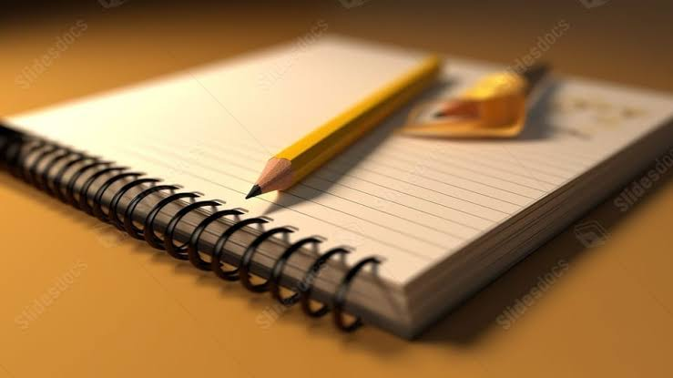
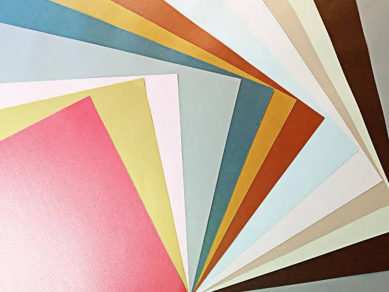

Útiles escolares
Lapiceras, lápices, reglas, gomas, tijeras y otros elementos básicos para el aula.
Útiles, papel y materiales para acompañar tus ideas.
Tenemos distintos artículos escolares para que puedas conseguir lo que necesitás en un solo lugar.
Lapiceras, lápices, reglas, gomas, tijeras y otros elementos básicos para el aula.

Hojas para carpeta, papel y otros materiales para tus actividades y trabajos prácticos.

Materiales para láminas, exposiciones, proyectos y tareas de distintas materias.